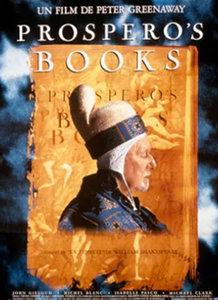
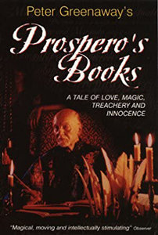
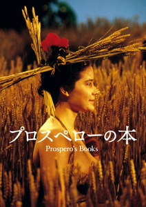
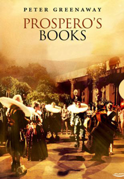
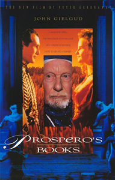
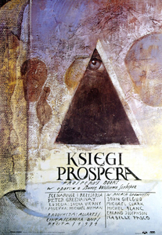

Prospero's Books is a complex tale based upon William Shakespeare's The Tempest. Miranda, the daughter of Prospero, an exiled magician, falls in love with Ferdinand, the son of his enemy; while the sorcerer's sprite, Ariel, convinces him to abandon revenge against the traitors from his earlier life. In the film, Prospero is Shakespeare himself, conceiving, designing, rehearsing, directing and performing the story's action as it unfolds and in the end, sitting down to write the completed work. Ariel is played by four actors: three acrobats - a boy, an adolescent and a youth - and a boy singer. Each represents a classical elemental.
Greenaway intended the film “as an homage to the actor and to his "mastery of illusion." In the film, Prospero is Shakespeare and, having rehearsed the action inside his head, speaking the lines of all the other characters, he concludes the film by sitting down to write The Tempest.”
Prospero
Alonso
Miranda
Sebastian
Adrian
Trinculo
Ariel



Gielgud is quoted as saying that a film of The Tempest (with him as Prospero) was his life's ambition, as he had been in four stage productions in 1931, 1940, 1957 and 1974. He had approached Alain Resnais, Ingmar Bergman, Akira Kurosawa and Orson Welles about directing him in it, with Benjamin Britten to compose its score, and Albert Finney as Caliban, before Greenaway agreed. The closest earlier attempts came to being made was in 1967, with Welles both directing and playing Caliban. But after the commercial failure of the film project, Chimes at Midnight, financing for a cinematic Tempest collapsed.


